A arte de conversar com bandeiras ao vento.
A necessidade de transmitir mensagens a longas distâncias é tão antiga quanto a própria humanidade. Antes do telégrafo elétrico, do rádio e da internet, povos usavam fogueiras, tambores e fumaça para enviar avisos. Foi nesse contexto que, em 1792, o engenheiro francês Claude Chappe apresentou o primeiro grande sistema de telegrafia óptica: torres equipadas com braços de madeira articulados que, vistos de longe com luneta, formavam combinações associadas a letras e palavras. Esse foi o nascimento oficial do semáforo — palavra que vem do grego sema (sinal) + phoros (que conduz).
Em 1866, o oficial inglês Frederick Marryat e, posteriormente, o almirante Philip Colomb adaptaram o conceito para a marinha, criando o sistema com bandeiras manuais que conhecemos hoje. Cada posição dos braços do sinaleiro representa uma letra, formada pelo ângulo das duas bandeiras em relação ao corpo.
O Código Semafórico foi essencial em guerras, na navegação e nas comunicações ferroviárias antes do rádio. Ainda hoje é usado pela marinha de muitos países como recurso de emergência — quando todo o resto falha, basta um par de bandeiras e um céu aberto.
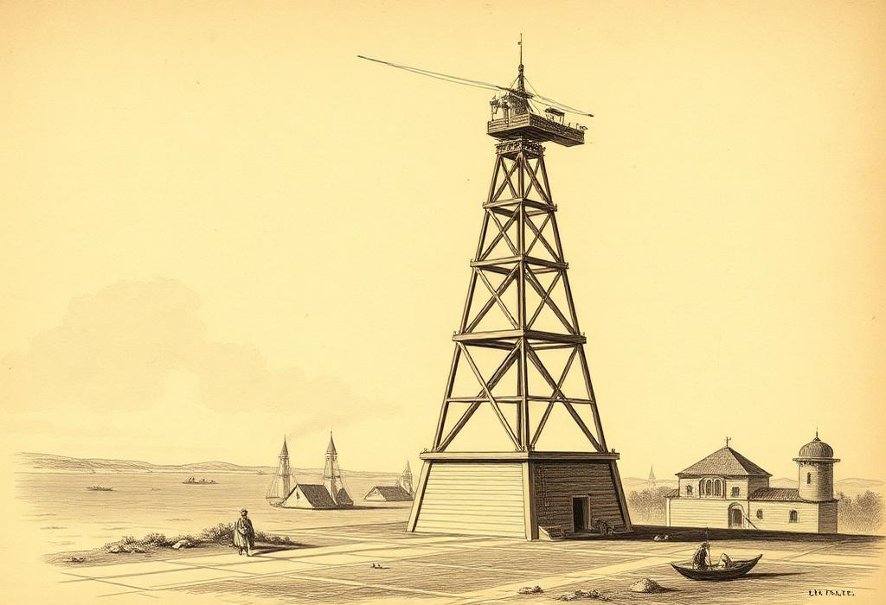
"Onde a voz não alcança e o rádio se cala, ainda restam dois braços firmes e o vento como mensageiro."
— Tradição dos sinaleirosCada letra é formada por uma combinação única de posições dos braços. O sinaleiro funciona como o ponteiro de um relógio: oito posições básicas (0°, 45°, 90°, 135°, 180°, 225°, 270°, 315°) que, combinadas, geram todo o alfabeto e os algarismos.
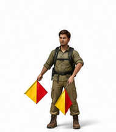
A / 1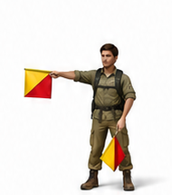
B / 2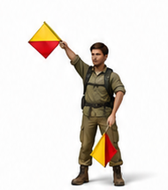
C / 3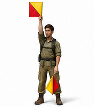
D / 4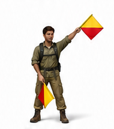
E / 5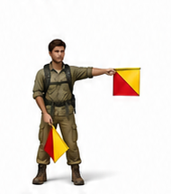
F / 6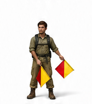
G / 7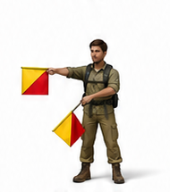
H / 8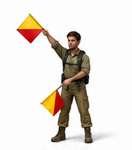
I / 9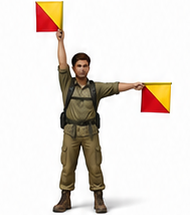
J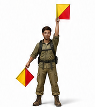
K / 0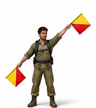
L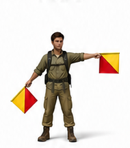
M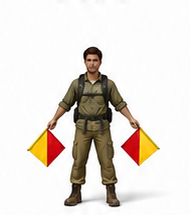
N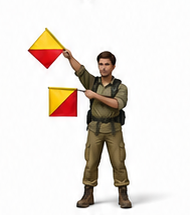
O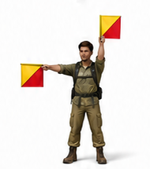
P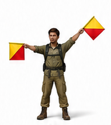
Q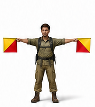
R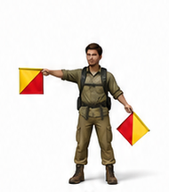
S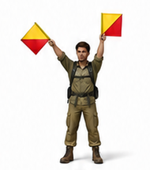
T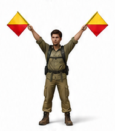
U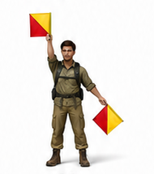
V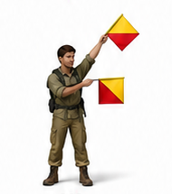
W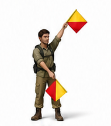
X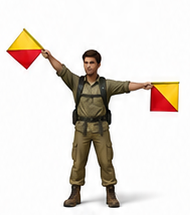
Y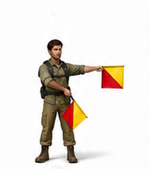
Z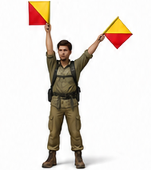
NUMERAL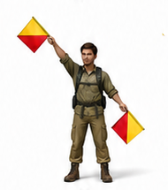
ERROAlém das letras e números, o código possui sinais de controle indispensáveis para que emissor e receptor se entendam sem confusão.
Bandeiras erguidas e cruzadas acima da cabeça. Avisa: "Vou começar a transmitir".
Cruza rapidamente as bandeiras em “X” na frente do corpo, ou faz a posição de erro, com a mão direita na diagonal para cima e a mão esquerda na diagonal para baixo. Indica: "Errei o caractere — vou repetir a palavra".
Mão direita para cima e esquerda para cima na diagonal. Avisa que os próximos caracteres serão algarismos, não letras. Os números 1–9 usam as mesmas posições de A até I, e o 0 usa a posição de K.
Sinal que encerra a sequência numérica e indica o retorno ao alfabeto. Mesma posição da letra J. Sem ele, o receptor continuaria interpretando as posições como números.
Bandeiras descansadas, cruzadas à frente do corpo. Marca o intervalo entre letras de uma mesma palavra ou pequena pausa entre palavras.
Equivale ao ponto final. Indicado pelo sinal AAA transmitido em sequência, mostrando o término de uma oração completa.
Sinal AR (A seguido de R) — significa "acabou, câmbio final". O receptor responde com R (recebido) confirmando a leitura completa.
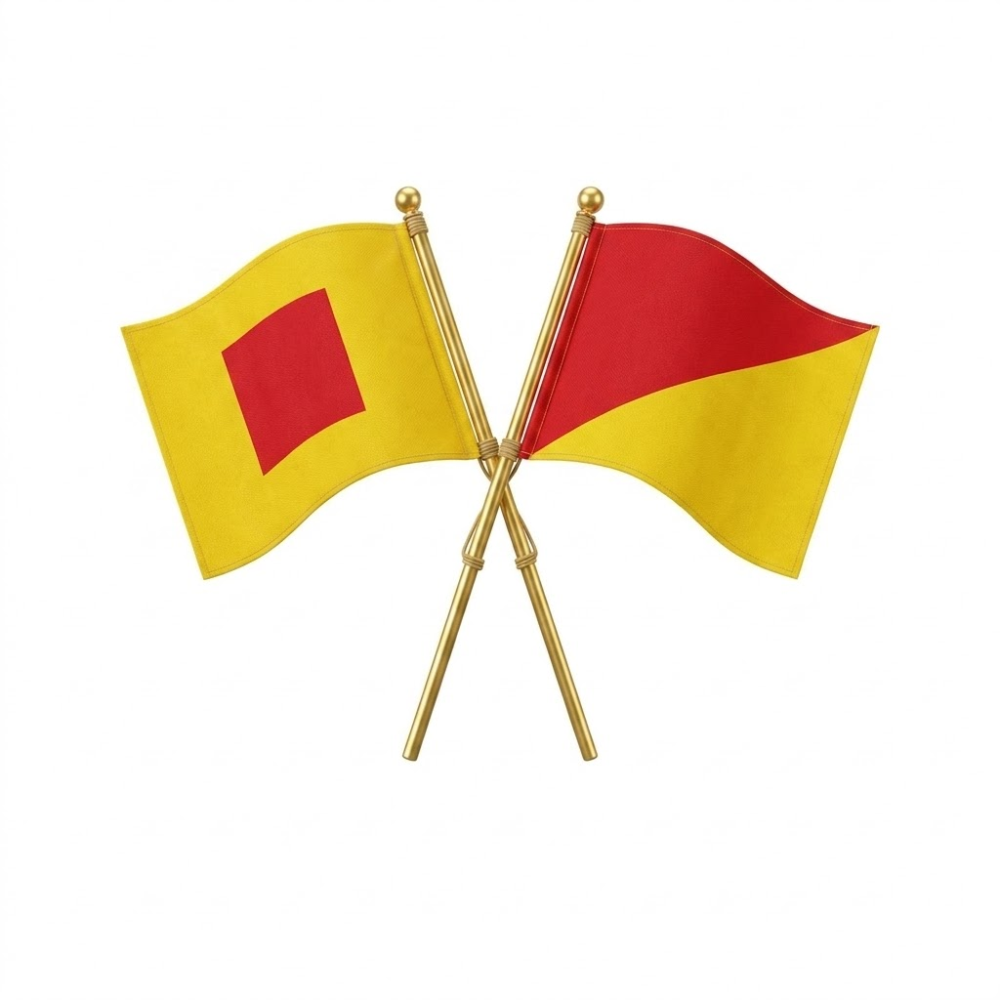
O par oficial mede 45 cm × 45 cm, dividido na diagonal, ou com um quadrado ao centro. A bandeira em duas cores contrastantes — tradicionalmente vermelho e amarelo (uso terrestre) ou vermelho e branco (uso naval). O cabo tem cerca de 60 cm de madeira leve, encaixado por uma bainha costurada em uma das pontas.
O contraste é fundamental: as cores devem se destacar contra qualquer fundo (céu, mata ou parede). Por isso o vermelho e amarelo, que mantêm visibilidade mesmo sob sol forte ou céu nublado.
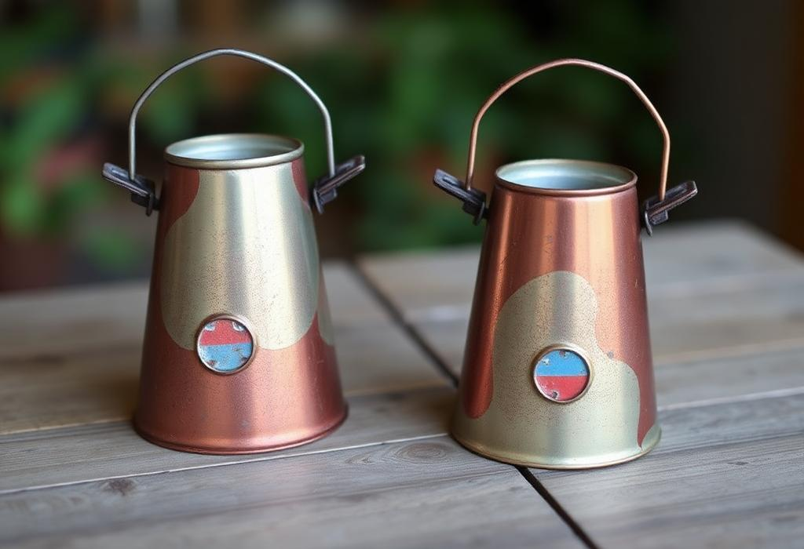
Para sinalização noturna, as bandeiras dão lugar aos cones de lanterna: tubos cônicos (de metal, papelão grosso ou PVC) com uma lanterna acesa dentro. O movimento dos cones substitui o movimento das bandeiras, criando rastros luminosos que desenham as posições no escuro.
Dica de construção: use latas vazias pintadas internamente de branco para refletir melhor a luz, e prenda uma alça de arame.
No campo, longe de uma loja, o desbravador improvisa! Galhos retos de aproximadamente 60 cm com um lenço, folha grande ou pedaço de tecido amarrado na ponta, formando um quadrado. O importante é o contraste com o fundo e o tamanho visível a 300–500 metros.
A meta da especialidade é transmitir mensagens a uma distância de 300 a 500 metros, levando no máximo 3 segundos por caractere. Isso exige treino, ritmo e clareza de movimento.
Comece com mensagens curtas e conhecidas, como "Tudo posso naquele que me fortalece. Filipenses 4.13" ou "O Senhor é o meu pastor. Salmo 23.1". A familiaridade ajuda na compreensão.
Transmita o Lema ("O Amor de Cristo me motiva"), o Alvo ("A mensagem do advento ao mundo todo em minha geração") ou um trecho da Lei e do Voto.
Texto definido pelo instrutor no momento da prova — testa a capacidade real de leitura sem decorar a mensagem. É o teste verdadeiro do sinaleiro!
Use as bandeiras em local elevado e aberto: topo de morro, clareira ou margem de rio. Posicione-se com o sol às costas do receptor (nunca de frente para ele) e use roupa escura para destacar os braços.
Dica: antes de transmitir, faça o sinal de Atenção e aguarde o K ("pronto, pode mandar") do receptor.
Substitua as bandeiras pelos cones de lanterna. Posicione-se contra fundo escuro (sem luzes da cidade atrás), e mova os cones com calma — a persistência da luz na visão facilita a leitura.
Em acampamentos noturnos, combine antes a frequência (3 a 4 segundos por caractere) e use o sinal de Erro sempre que houver dúvida.
O famoso símbolo ☮ da paz foi criado em 1958 por Gerald Holtom combinando os sinais semafóricos das letras N (de Nuclear) e D (de Disarmament) sobrepostos.
Em 1794, uma mensagem podia atravessar 230 km de Lille a Paris pelas torres de Chappe em apenas 9 minutos. Por carruagem levava dias!
A Marinha dos EUA, o Reino Unido e o Brasil mantêm o código semafórico no treinamento naval para situações de silêncio de rádio (EMCON).
Um sinaleiro experiente envia até 20 caracteres por minuto. O recorde naval registrado ultrapassa 30 cpm.
Com binóculos potentes, o código já foi lido a mais de 3 km em condições ideais de luz e clima. A olho nu, 500 m é o limite confortável.
Sema + phoros = "portador de sinais". A mesma raiz do nome semáforo de trânsito, que também transmite informação por sinais visuais!